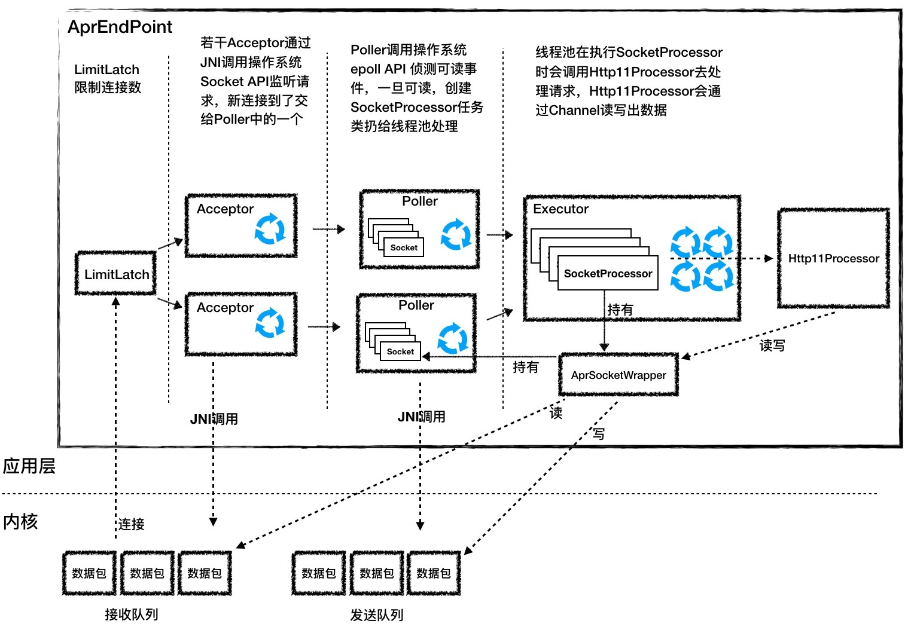
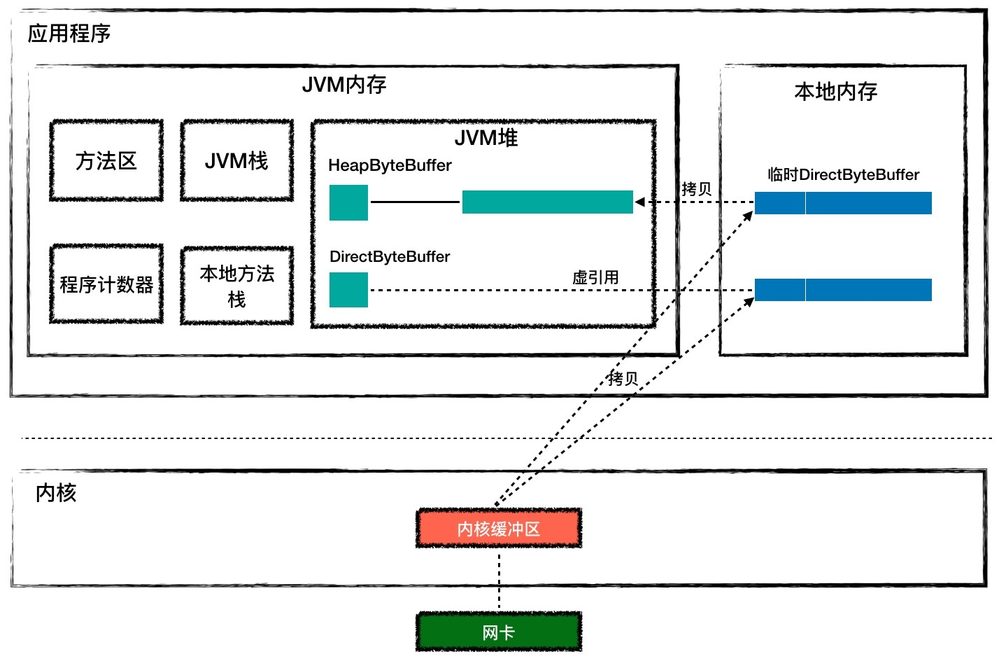
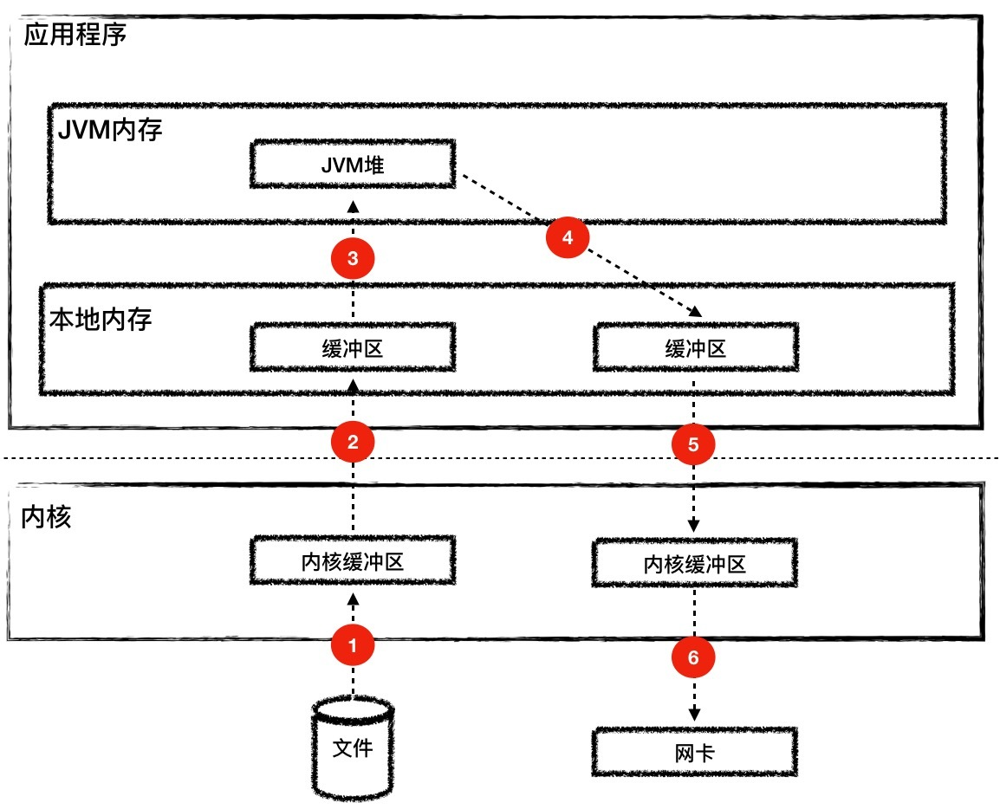
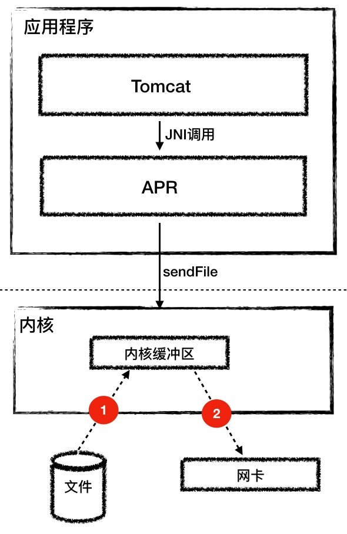

- 00 开篇词 Java程序员如何快速成长？.md.html
- 01 Web容器学习路径.md.html
- 02 HTTP协议必知必会.md.html
- 03 你应该知道的Servlet规范和Servlet容器.md.html
- 04 实战：纯手工打造和运行一个Servlet.md.html
- 05 Tomcat系统架构（上）： 连接器是如何设计的？.md.html
- 06 Tomcat系统架构（下）：聊聊多层容器的设计.md.html
- 07 Tomcat如何实现一键式启停？.md.html
- 08 Tomcat的“高层们”都负责做什么？.md.html
- 09 比较：Jetty架构特点之Connector组件.md.html
- 10 比较：Jetty架构特点之Handler组件.md.html
- 11 总结：从Tomcat和Jetty中提炼组件化设计规范.md.html
- 12 实战：优化并提高Tomcat启动速度.md.html
- 13 热点问题答疑（1）：如何学习源码？.md.html
- 14 NioEndpoint组件：Tomcat如何实现非阻塞I_O？.md.html
- 15 Nio2Endpoint组件：Tomcat如何实现异步I_O？.md.html
- 16 AprEndpoint组件：Tomcat APR提高I_O性能的秘密.md.html
- 17 Executor组件：Tomcat如何扩展Java线程池？.md.html
- 18 新特性：Tomcat如何支持WebSocket？.md.html
- 19 比较：Jetty的线程策略EatWhatYouKill.md.html
- 20 总结：Tomcat和Jetty中的对象池技术.md.html
- 21 总结：Tomcat和Jetty的高性能、高并发之道.md.html
- 22 热点问题答疑（2）：内核如何阻塞与唤醒进程？.md.html
- 23 Host容器：Tomcat如何实现热部署和热加载？.md.html
- 24 Context容器（上）：Tomcat如何打破双亲委托机制？.md.html
- 25 Context容器（中）：Tomcat如何隔离Web应用？.md.html
- 26 Context容器（下）：Tomcat如何实现Servlet规范？.md.html
- 27 新特性：Tomcat如何支持异步Servlet？.md.html
- 28 新特性：Spring Boot如何使用内嵌式的Tomcat和Jetty？.md.html
- 29 比较：Jetty如何实现具有上下文信息的责任链？.md.html
- 30 热点问题答疑（3）：Spring框架中的设计模式.md.html
- 31 Logger组件：Tomcat的日志框架及实战.md.html
- 32 Manager组件：Tomcat的Session管理机制解析.md.html
- 33 Cluster组件：Tomcat的集群通信原理.md.html
- 34 JVM GC原理及调优的基本思路.md.html
- 35 如何监控Tomcat的性能？.md.html
- 36 Tomcat I_O和线程池的并发调优.md.html
- 37 Tomcat内存溢出的原因分析及调优.md.html
- 38 Tomcat拒绝连接原因分析及网络优化.md.html
- 39 Tomcat进程占用CPU过高怎么办？.md.html
- 40 谈谈Jetty性能调优的思路.md.html
- 41 热点问题答疑（4）： Tomcat和Jetty有哪些不同？.md.html
- 特别放送 如何持续保持对学习的兴趣？.md.html
- 结束语 静下心来，品味经典.md.html
- 捐赠
16 AprEndpoint组件：Tomcat APR提高I_O性能的秘密
我们在使用Tomcat时，会在启动日志里看到这样的提示信息：
The APR based Apache Tomcat Native library which allows optimal performance in production environments was not found on the java.library.path: ***
这句话的意思就是推荐你去安装APR库，可以提高系统性能。那什么是APR呢？
APR（Apache Portable Runtime Libraries）是Apache可移植运行时库，它是用C语言实现的，其目的是向上层应用程序提供一个跨平台的操作系统接口库。Tomcat可以用它来处理包括文件和网络I/O，从而提升性能。我在专栏前面提到过，Tomcat支持的连接器有NIO、NIO.2和APR。跟NioEndpoint一样，AprEndpoint也实现了非阻塞I/O，它们的区别是：NioEndpoint通过调用Java的NIO API来实现非阻塞I/O，而AprEndpoint是通过JNI调用APR本地库而实现非阻塞I/O的。
那同样是非阻塞I/O，为什么Tomcat会提示使用APR本地库的性能会更好呢？这是因为在某些场景下，比如需要频繁与操作系统进行交互，Socket网络通信就是这样一个场景，特别是如果你的Web应用使用了TLS来加密传输，我们知道TLS协议在握手过程中有多次网络交互，在这种情况下Java跟C语言程序相比还是有一定的差距，而这正是APR的强项。
Tomcat本身是Java编写的，为了调用C语言编写的APR，需要通过JNI方式来调用。JNI（Java Native Interface） 是JDK提供的一个编程接口，它允许Java程序调用其他语言编写的程序或者代码库，其实JDK本身的实现也大量用到JNI技术来调用本地C程序库。
在今天这一期文章，首先我会讲AprEndpoint组件的工作过程，接着我会在原理的基础上分析APR提升性能的一些秘密。在今天的学习过程中会涉及到一些操作系统的底层原理，毫无疑问掌握这些底层知识对于提高你的内功非常有帮助。
AprEndpoint工作过程
下面我还是通过一张图来帮你理解AprEndpoint的工作过程。

你会发现它跟NioEndpoint的图很像，从左到右有LimitLatch、Acceptor、Poller、SocketProcessor和Http11Processor，只是Acceptor和Poller的实现和NioEndpoint不同。接下来我分别来讲讲这两个组件。
Acceptor
Accpetor的功能就是监听连接，接收并建立连接。它的本质就是调用了四个操作系统API：Socket、Bind、Listen和Accept。那Java语言如何直接调用C语言API呢？答案就是通过JNI。具体来说就是两步：先封装一个Java类，在里面定义一堆用native关键字修饰的方法，像下面这样。
public class Socket {
...
//用native修饰这个方法，表明这个函数是C语言实现
public static native long create(int family, int type,
int protocol, long cont)
public static native int bind(long sock, long sa);
public static native int listen(long sock, int backlog);
public static native long accept(long sock)
}
接着用C代码实现这些方法，比如Bind函数就是这样实现的：
//注意函数的名字要符合JNI规范的要求
JNIEXPORT jint JNICALL
Java_org_apache_tomcat_jni_Socket_bind(JNIEnv *e, jlong sock,jlong sa)
{
jint rv = APR_SUCCESS;
tcn_socket_t *s = (tcn_socket_t *）sock;
apr_sockaddr_t *a = (apr_sockaddr_t *) sa;
//调用APR库自己实现的bind函数
rv = (jint)apr_socket_bind(s->sock, a);
return rv;
}
专栏里我就不展开JNI的细节了，你可以扩展阅读获得更多信息和例子。我们要注意的是函数名字要符合JNI的规范，以及Java和C语言如何互相传递参数，比如在C语言有指针，Java没有指针的概念，所以在Java中用long类型来表示指针。AprEndpoint的Acceptor组件就是调用了APR实现的四个API。
Poller
Acceptor接收到一个新的Socket连接后，按照NioEndpoint的实现，它会把这个Socket交给Poller去查询I/O事件。AprEndpoint也是这样做的，不过AprEndpoint的Poller并不是调用Java NIO里的Selector来查询Socket的状态，而是通过JNI调用APR中的poll方法，而APR又是调用了操作系统的epoll API来实现的。
这里有个特别的地方是在AprEndpoint中，我们可以配置一个叫deferAccept的参数，它对应的是TCP协议中的TCP_DEFER_ACCEPT，设置这个参数后，当TCP客户端有新的连接请求到达时，TCP服务端先不建立连接，而是再等等，直到客户端有请求数据发过来时再建立连接。这样的好处是服务端不需要用Selector去反复查询请求数据是否就绪。
这是一种TCP协议层的优化，不是每个操作系统内核都支持，因为Java作为一种跨平台语言，需要屏蔽各种操作系统的差异，因此并没有把这个参数提供给用户；但是对于APR来说，它的目的就是尽可能提升性能，因此它向用户暴露了这个参数。
APR提升性能的秘密
APR连接器之所以能提高Tomcat的性能，除了APR本身是C程序库之外，还有哪些提速的秘密呢？
JVM堆 VS 本地内存
我们知道Java的类实例一般在JVM堆上分配，而Java是通过JNI调用C代码来实现Socket通信的，那么C代码在运行过程中需要的内存又是从哪里分配的呢？C代码能否直接操作Java堆？
为了回答这些问题，我先来说说JVM和用户进程的关系。如果你想运行一个Java类文件，可以用下面的Java命令来执行。
java my.class
这个命令行中的java其实是一个可执行程序，这个程序会创建JVM来加载和运行你的Java类。操作系统会创建一个进程来执行这个java可执行程序，而每个进程都有自己的虚拟地址空间，JVM用到的内存（包括堆、栈和方法区）就是从进程的虚拟地址空间上分配的。请你注意的是，JVM内存只是进程空间的一部分，除此之外进程空间内还有代码段、数据段、内存映射区、内核空间等。从JVM的角度看，JVM内存之外的部分叫作本地内存，C程序代码在运行过程中用到的内存就是本地内存中分配的。下面我们通过一张图来理解一下。

Tomcat的Endpoint组件在接收网络数据时需要预先分配好一块Buffer，所谓的Buffer就是字节数组byte[]，Java通过JNI调用把这块Buffer的地址传给C代码，C代码通过操作系统API读取Socket并把数据填充到这块Buffer。Java NIO API提供了两种Buffer来接收数据：HeapByteBuffer和DirectByteBuffer，下面的代码演示了如何创建两种Buffer。
//分配HeapByteBuffer
ByteBuffer buf = ByteBuffer.allocate(1024);
//分配DirectByteBuffer
ByteBuffer buf = ByteBuffer.allocateDirect(1024);
创建好Buffer后直接传给Channel的read或者write函数，最终这块Buffer会通过JNI调用传递给C程序。
//将buf作为read函数的参数
int bytesRead = socketChannel.read(buf);
那HeapByteBuffer和DirectByteBuffer有什么区别呢？HeapByteBuffer对象本身在JVM堆上分配，并且它持有的字节数组byte[]也是在JVM堆上分配。但是如果用HeapByteBuffer来接收网络数据，需要把数据从内核先拷贝到一个临时的本地内存，再从临时本地内存拷贝到JVM堆，而不是直接从内核拷贝到JVM堆上。这是为什么呢？这是因为数据从内核拷贝到JVM堆的过程中，JVM可能会发生GC，GC过程中对象可能会被移动，也就是说JVM堆上的字节数组可能会被移动，这样的话Buffer地址就失效了。如果这中间经过本地内存中转，从本地内存到JVM堆的拷贝过程中JVM可以保证不做GC。
如果使用HeapByteBuffer，你会发现JVM堆和内核之间多了一层中转，而DirectByteBuffer用来解决这个问题，DirectByteBuffer对象本身在JVM堆上，但是它持有的字节数组不是从JVM堆上分配的，而是从本地内存分配的。DirectByteBuffer对象中有个long类型字段address，记录着本地内存的地址，这样在接收数据的时候，直接把这个本地内存地址传递给C程序，C程序会将网络数据从内核拷贝到这个本地内存，JVM可以直接读取这个本地内存，这种方式比HeapByteBuffer少了一次拷贝，因此一般来说它的速度会比HeapByteBuffer快好几倍。你可以通过上面的图加深理解。
Tomcat中的AprEndpoint就是通过DirectByteBuffer来接收数据的，而NioEndpoint和Nio2Endpoint是通过HeapByteBuffer来接收数据的。你可能会问，NioEndpoint和Nio2Endpoint为什么不用DirectByteBuffer呢？这是因为本地内存不好管理，发生内存泄漏难以定位，从稳定性考虑，NioEndpoint和Nio2Endpoint没有去冒这个险。
sendfile
我们再来考虑另一个网络通信的场景，也就是静态文件的处理。浏览器通过Tomcat来获取一个HTML文件，而Tomcat的处理逻辑无非是两步：
- 从磁盘读取HTML到内存。
- 将这段内存的内容通过Socket发送出去。
但是在传统方式下，有很多次的内存拷贝：
- 读取文件时，首先是内核把文件内容读取到内核缓冲区。
- 如果使用HeapByteBuffer，文件数据从内核到JVM堆内存需要经过本地内存中转。
- 同样在将文件内容推入网络时，从JVM堆到内核缓冲区需要经过本地内存中转。
- 最后还需要把文件从内核缓冲区拷贝到网卡缓冲区。
从下面的图你会发现这个过程有6次内存拷贝，并且read和write等系统调用将导致进程从用户态到内核态的切换，会耗费大量的CPU和内存资源。

而Tomcat的AprEndpoint通过操作系统层面的sendfile特性解决了这个问题，sendfile系统调用方式非常简洁。
sendfile(socket, file, len);
它带有两个关键参数：Socket和文件句柄。将文件从磁盘写入Socket的过程只有两步：
第一步：将文件内容读取到内核缓冲区。
第二步：数据并没有从内核缓冲区复制到Socket关联的缓冲区，只有记录数据位置和长度的描述符被添加到Socket缓冲区中；接着把数据直接从内核缓冲区传递给网卡。这个过程你可以看下面的图。

本期精华
对于一些需要频繁与操作系统进行交互的场景，比如网络通信，Java的效率没有C语言高，特别是TLS协议握手过程中需要多次网络交互，这种情况下使用APR本地库能够显著提升性能。
除此之外，APR提升性能的秘密还有：通过DirectByteBuffer避免了JVM堆与本地内存之间的内存拷贝；通过sendfile特性避免了内核与应用之间的内存拷贝以及用户态和内核态的切换。其实很多高性能网络通信组件，比如Netty，都是通过DirectByteBuffer来收发网络数据的。由于本地内存难于管理，Netty采用了本地内存池技术，感兴趣的同学可以深入了解一下。
课后思考
为什么不同的操作系统，比如Linux和Windows，都有自己的Java虚拟机？
不知道今天的内容你消化得如何？如果还有疑问，请大胆的在留言区提问，也欢迎你把你的课后思考和心得记录下来，与我和其他同学一起讨论。如果你觉得今天有所收获，欢迎你把它分享给你的朋友。
© 2019 - 2023 Liangliang Lee. Powered by gin and hexo-theme-book.